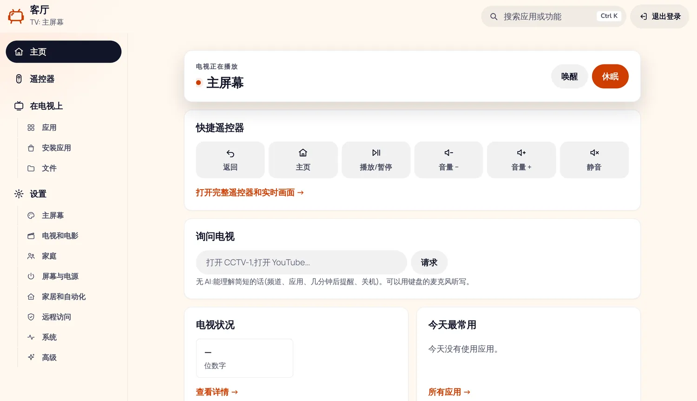
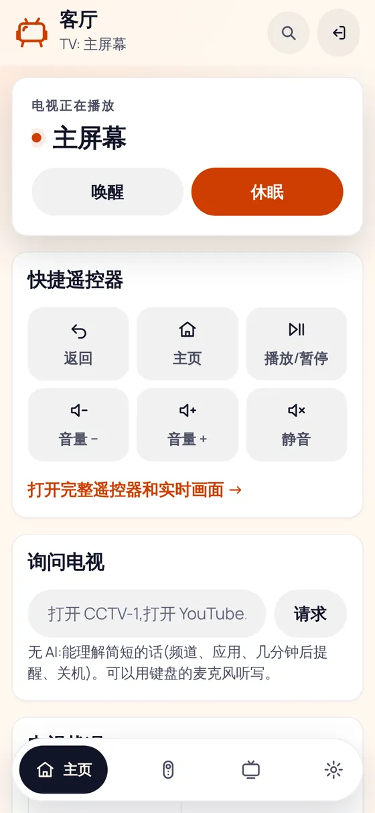
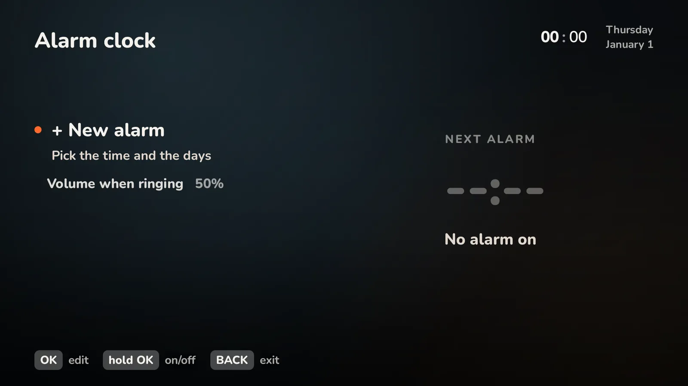
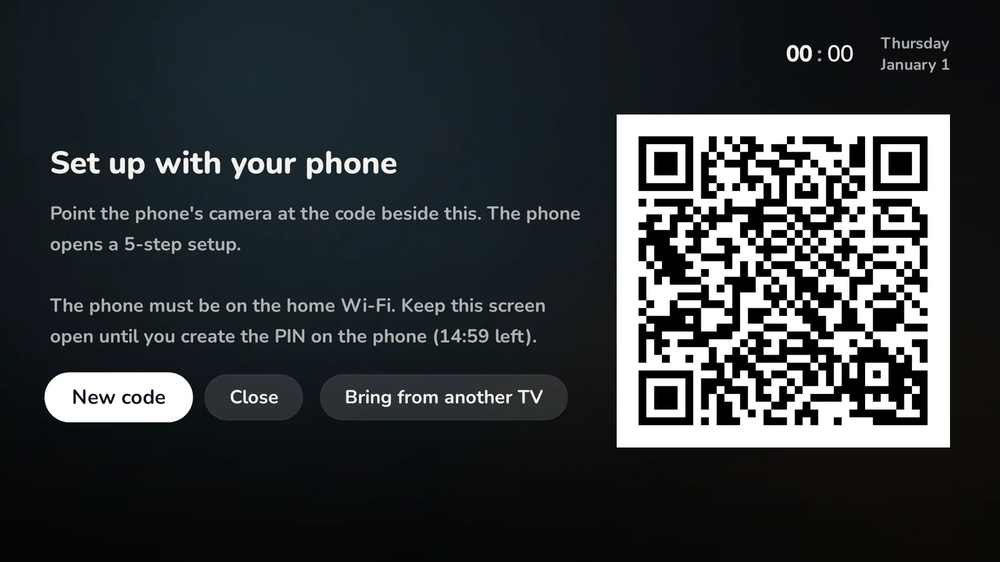
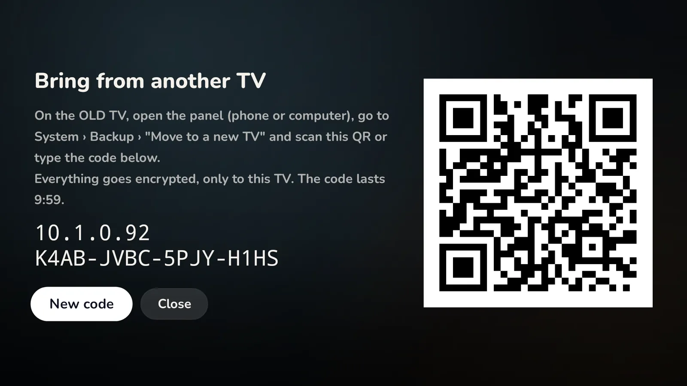

让电视重新变简单。 一切各就其位，就像收拾整齐的客厅。
为只想躺在沙发上看电视的人而做。 Sofaly 换的是主屏幕，不是你的电视：Google 还在，没有广告，每样东西只放在一个地方。
一个十字，五个世界
继续、观看、收听、游戏和应用。任何东西两下点击即达。
完全无广告
即使是免费方案，也没有一个赞助位。没有任何追踪离开你的家。
普通电视上也很快
在 32 位 Chromecast 上实测：动画会按设备的能力自动调整。
为全家人打造
长辈也能用
大字体、会读出应用名称的简洁模式、高对比度和屏幕阅读器。支持 15 种语言。
和你一起醒来
闹钟会自动打开电视，慢慢调高音量，并打开早上好：时间、天气和日程。
照看家里
在电视上控制 Home Assistant 的灯光、场景和门铃。全家出门后自动休眠。
和手机对话
用家里任何手机或电脑控制、输入和发送消息，PIN 保护。
准确的天气
当前天气来自最近的机场：是测量的，不是猜的。按一下 OK 查看 9 天预报。
自己照顾自己
每晚加密备份，你睡觉时自动维护，还有能说清问题出在哪的诊断。
电视也能在手机和电脑上用。
在同一网络里打开浏览器，输入 PIN 就行：遥控、中文输入、电视画面实时显示、留言和设置。无需安装，无需账号。


- 手机和电脑上的面板遥控器、中文输入、电视画面实时查看、屏保照片、留言板和备份，在家中任何设备的浏览器里都能用。
- 跟电视说输入或说“打开 YouTube”“7 分钟后提醒我”“30 分钟后关机”，电视就会照做。
- 从手机分享把面板安装为应用后，它会出现在分享中：YouTube 视频和链接在电视上打开，文字变成消息。
- Windows 快捷方式电视会出现在资源管理器的网络中，带有打开面板的快捷方式，即使 IP 改变也能用。
- 把电视当网络驱动器拖放即可把文件复制到电视：在 Windows 中它像手机一样出现在“此电脑”；在 Mac、Linux 和手机上通过安全的 WebDAV。
- 多个家用同一部手机照看你家和父母家的电视。
真实的面板界面，使用示例数据。
122 件新事，你的电视从此都能做。 按 12 个世界整理，就像十字整理屏幕那样。
- 十字人人都看得懂的整洁屏幕，按你喜欢的方式排列。19
- 观看你的电影、剧集，以及家庭影院级播放器。14
- 收听电台和播客，与视频同样用心。5
- 游戏所有游戏集中一处，随时可用手柄。6
- 应用按合理的顺序排列你的应用。3
- 家居闹钟、计时器、自动化和智能家居。13
- 天气和屏保准确的天气，以及值得一直开着的屏保。15
- 家人每人一个资料，照顾孩子，热情招待客人。12
- 手机和电脑电视与家里的设备对话。11
- 自己照顾自己备份、维护和诊断，不用你记着。13
- 人人可用为视力、听力或使用遥控器方式不同的人设计。5
- 隐私无广告、无追踪，关键处有 PIN。6
十字
人人都看得懂的整洁屏幕，按你喜欢的方式排列。

十字
继续、观看、收听、游戏和应用排成一行。选中的世界会放大，内容就在正下方。
继续
一个地方回到你正在做的事：剧集、电台、播客或上一个应用。
顶部栏
搜索、语音、一行天气和时钟，始终在同一位置。浏览时自动收起，让屏幕更清爽。
十字
继续、观看、收听、游戏和应用排成一行。选中的世界会放大，内容就在正下方。
位置： ◀ ▶ 切换世界，▲ ▼ 在列中移动，OK 打开。继续
一个地方回到你正在做的事：剧集、电台、播客或上一个应用。
位置： 它是十字的第一项。顶部栏
搜索、语音、一行天气和时钟，始终在同一位置。浏览时自动收起，让屏幕更清爽。
位置： 按 ▲ 进入。Google 照常可用
Google 助理、Gemini、搜索和你的 Google 账号都像以前一样可用。Sofaly 改变的是主屏，不是你的电视。
位置： 照常使用麦克风按钮。快捷面板
Wi-Fi、蓝牙、睡眠定时、声音输出、闹钟、资料、通知和购物清单，在任何应用中都能打开。
位置： 长按返回键。你的遥控器，你做主
HOME 总是回到 Sofaly。长按返回打开快捷面板，长按 HOME 打开家居，在应用上长按 OK 打开它的菜单。
位置： 按键测试器会显示电视收到的每个按键。正在播放
顶部的胶囊显示正在播放内容的封面和标题。OK 暂停或继续，长按 OK 打开应用。
位置： 在主屏幕 › 更多选项中开启。主题和背景
深色：显示选中内容的图片。画廊：每天一幅大都会博物馆的画作。天空：卫星图和地图。或者用你自己的照片或视频做背景。也支持插件背景，比如 Overflight 的航拍画面。
位置： 深色、画廊和天空属于 Basic，其余属于 Pro。喜欢的图标Pro
使用 Play 上的图标包，或逐个更换单个应用的图标。
位置： 在应用上长按 OK › 更换图标。按电视性能决定动画
性能强的电视全部动起来；简单些的电视只动你选的部分，掉帧时自动减少。
位置： 设置 › 外观。月相Pro
今晚的月亮和被照亮的比例，由电视自己计算，无需联网。
位置： 显示在预报、屏保和夜间的天气图标上。设置 › 外观。倒计时Pro
距离你选择的日期或下一个节假日还有几天。
位置： 显示在屏幕顶部的胶囊里。设置 › 外观。家务提醒Pro
在你选定的星期几重复出现的提醒：倒可回收垃圾、吃药、上课。
位置： 显示在屏幕顶部的胶囊里。设置 › 外观。你的服务状态Pro
电视检测你提供的地址，显示它是否在线：家庭服务器、店铺网站。
位置： 显示在屏幕顶部的胶囊里。设置 › 外观。今日行情Pro
货币、比特币和以太币的当日价格，来自公开的官方数据源。
位置： 显示在顶部栏的天气旁边。设置 › 外观。你支持的球队的下一场比赛Pro
你的球队下一场何时、对阵谁，显示在主屏幕卡片上。
位置： 显示在十字的电视项中。设置 › 外观。其他应用的卡片Pro
除了 Sofaly 自己的卡片，合作应用也能把它们的卡片放上主屏幕：外卖、公交、小区通知。
位置： 卡片显示在观看的末尾。屏幕顶部的岛
提醒在顶部的胶囊里轮流出现：没有网络、提醒事项、日程和闹钟。重要的会放大 5 秒并显示“▲ 打开”，家里的门铃立即出现，打开电视时还会给出期间发生了什么的摘要。在十字顶部长按 ▲ 打开中心。
位置： 主屏幕顶部。在对的时间给对的建议
不用人工智能：根据一周的使用，电视在那个时段推荐合适的内容。
位置： 主屏幕。
观看
你的电影、剧集，以及家庭影院级播放器。

来自电脑
来自 Plex、Jellyfin、Emby、电脑或 NAS 文件夹（SMB、WebDAV、FTP、SFTP、NFS）、OneDrive、Dropbox、Box、Google 云端硬盘、UPnP 和 U 盘的视频、音乐和照片。
什么都能播的播放器
杜比（AC3、E-AC3）、DTS 和 TrueHD 音频，以及蓝光、DVD 和动画字幕，无需安装 Kodi 或 VLC。
从停下的地方继续
电影和剧集会回到正确的位置。下一集 10 秒后开始，连续 3 集后电视会问你是否还在看。
来自电脑
来自 Plex、Jellyfin、Emby、电脑或 NAS 文件夹（SMB、WebDAV、FTP、SFTP、NFS）、OneDrive、Dropbox、Box、Google 云端硬盘、UPnP 和 U 盘的视频、音乐和照片。
位置： 已开启的服务器和 U 盘会自动出现；其他在添加中设置。什么都能播的播放器
杜比（AC3、E-AC3）、DTS 和 TrueHD 音频，以及蓝光、DVD 和动画字幕，无需安装 Kodi 或 VLC。
位置： 播放时按 ▼ 选择音轨、字幕和字幕大小。从停下的地方继续
电影和剧集会回到正确的位置。下一集 10 秒后开始，连续 3 集后电视会问你是否还在看。
位置： 自动运行。跳过片头
如果已知剧集的片头，会显示“跳过片头 · OK”。你也可以标记一次，电视会记住。
位置： 默认开启。偏好的音轨和字幕
原声配字幕或配音，选一次就按作品记住。文件没有字幕时从网上获取。
位置： 电视和电影 › 音频和字幕。电影不卡顿
播放电影时电视切换到 24 Hz，镜头移动更顺滑。
位置： 随电影自动开启；屏幕会黑一秒。看得更清，听得更明
黑底或黄色字幕、突出人声的“更清晰的人声”，以及压低大声、提升小声的“均衡音量”。
位置： 在播放器的 ▼ 菜单中。自动字幕Ultra
没有你的语言的字幕时，电视会翻译现有的字幕。
位置： 在播放器的字幕菜单中选择。完整的影片页面Ultra
海报、评分、演员、预告片、分级和系列作品，在大字体的精美页面上。还有“这位演员是谁？”：照片、角色和其他作品。
位置： 在电影或剧集上按 OK。你的 Trakt 和 Simkl 列表Pro
想看的和看过的，与你的账号和其他设备同步。
位置： 在电视和电影 › 服务中扫码登录。一次搜索全部
同时查找电影、剧集、电台和应用，并把同一搜索带到 YouTube、Netflix 或 Prime Video。
位置： 在顶部栏或用语音。同时显示两种字幕
例如下方中文、上方原文，用来学习或一起观看。
位置： 播放器 ▼ 菜单 › 字幕。对白更响亮
5.1 声道变成立体声时，人声留在前面，爆炸声不会盖过说话声。
位置： 播放器 ▼ 菜单。防剧透与第二语言
没看过的那集的简介会被隐藏。没有你语言的音轨或字幕？就换成你选好的第二语言。
位置： 电视和电影 › 音频和字幕。
收听
电台和播客，与视频同样用心。

全球电台
数千个公开电台，按名称、国家或类型查找，还有收藏和最近收听。
播客
按名称订阅，在电视上收听，从上次停下的地方继续。
发现播客
搜索整个公开播客目录，查看你所在国家的热门节目。
全球电台
数千个公开电台，按名称、国家或类型查找，还有收藏和最近收听。
位置： 收听 › 电台。播客
按名称订阅，在电视上收听，从上次停下的地方继续。
位置： 收听 › 播客。发现播客Pro
搜索整个公开播客目录，查看你所在国家的热门节目。
位置： 收听 › 播客 › 搜索。全屏播放器
大封面、章节、倍速和在单集结束时暂停的睡眠定时。
位置： 收听 › 正在播放 › 打开播放器。用耳机听声音Pro
电影的声音同步传到手机耳机，夜里看也不会吵醒别人。
位置： 播放器 ▼ 菜单 › 手机播放声音。
游戏
所有游戏集中一处，随时可用手柄。

所有游戏集中一处
GeForce NOW、Steam Link、Moonlight、PS Remote Play、RetroArch 和电视游戏离开应用行，住进游戏，分为云端、来自电脑、复古和电视上。
玩楼上电脑里的游戏
电视通过网络唤醒电脑，等待响应，然后打开 Moonlight 或 Steam Link。通过网络唤醒电脑也能在“游戏”之外使用，用主屏幕上的快捷方式即可。
测试网络
告诉你网速能否支撑云游戏，并在弱网打开云游戏前提醒你。
所有游戏集中一处
GeForce NOW、Steam Link、Moonlight、PS Remote Play、RetroArch 和电视游戏离开应用行，住进游戏，分为云端、来自电脑、复古和电视上。
位置： 在游戏上长按 OK 更改分组。玩楼上电脑里的游戏
电视通过网络唤醒电脑，等待响应，然后打开 Moonlight 或 Steam Link。通过网络唤醒电脑也能在“游戏”之外使用，用主屏幕上的快捷方式即可。
位置： 在网页面板中保存一次电脑。测试网络
告诉你网速能否支撑云游戏，并在弱网打开云游戏前提醒你。
位置： 游戏 › 测试网络。游戏手柄
无需翻找菜单即可配对手柄，在顶部看到已连接的手柄；如果你愿意，连接手柄时自动打开游戏。
位置： 游戏 › 配对手柄。游戏模式
打开游戏时，屏保、夜间滤镜和通知会等到对局结束。
位置： 自动开启。你的 Discord 队友
查看 Discord 服务器里谁在线、在玩什么游戏，并直接从电视上召集队友。
位置： 开启服务器小组件并粘贴其编号。
应用
按合理的顺序排列你的应用。
常用的放前面
应用显示你最常打开的 8 个，“全部应用”以网格显示其余的。
按你的方式
移动、堆叠或隐藏任何应用。不用的预装应用会让开。
Netflix 和 YouTube 按键随你设
遥控器上的应用按键可以打开你想要的任何应用。按下打开，长按 3 秒更换。
常用的放前面
应用显示你最常打开的 8 个，“全部应用”以网格显示其余的。
位置： 十字上的应用。按你的方式
移动、堆叠或隐藏任何应用。不用的预装应用会让开。
位置： 在应用上长按 OK。Netflix 和 YouTube 按键随你设
遥控器上的应用按键可以打开你想要的任何应用。按下打开，长按 3 秒更换。
位置： 适用于原装遥控器。
家居
闹钟、计时器、自动化和智能家居。

能打开电视的闹钟
到点电视自动开机，音量慢慢升高，还能稍后提醒。每个闹钟都有名称、日期、铃声和音量，甚至可以是一个应用或上次的电台。
计时器和沙漏
最多 3 个带名称的计时器，屏幕提醒，还有秒表。
温柔关机
睡眠定时在最后 5 分钟调暗屏幕、降低音量，关机时不会把人吵醒。
能打开电视的闹钟
到点电视自动开机，音量慢慢升高，还能稍后提醒。每个闹钟都有名称、日期、铃声和音量，甚至可以是一个应用或上次的电台。
位置： 长按返回 › 闹钟。计时器和沙漏
最多 3 个带名称的计时器，屏幕提醒，还有秒表。
位置： “Hey Google，打开 10 分钟后提醒我”。温柔关机
睡眠定时在最后 5 分钟调暗屏幕、降低音量，关机时不会把人吵醒。
位置： 快捷面板中的定时器磁贴。没人看就关机
在你设定的时间内没有按键，电视会用大字问你是否还在看，然后休眠。
位置： 屏幕和电源 › 闲置时关机。现成的配方
睡觉、追剧和看球一键设置电视（声音、屏幕和通知）。按一下 OK 应用，再按一下撤销。
位置： 快捷面板。自动化Pro
在设定时间、按下按键或发生某事时（电影暂停、全家出门、快下雨了）：电视打开应用、运行场景或关机。
位置： 家居和自动化 › 自动化。电视上的 Home AssistantPro
灯、插座、风扇、窗帘、空调和场景，坐在沙发上就能控制。直接与你网络中的服务器通信，中间没有云。
位置： 长按 HOME。门口是谁Pro
门铃响起时，摄像头的画面会出现在你正在看的内容上方。
位置： 配合 Home Assistant。全家出门就休眠
配合 UniFi 路由器，电视会发现家人的手机已离开，然后休眠。
位置： 屏幕和电源 › 更多选项。语音快捷方式
“Hey Google，打开天气播报”会朗读天气预报。电影、我的家、留言板、计时器和关机也能这样打开。
位置： 使用麦克风按钮。随电视一起开机
用电视自己的遥控器开机？设备也会一起唤醒，没有黑屏。还能通过网络调 LG 的音量；设备进入休眠时，LG 也一起关机。
位置： 自动开启。勿扰
在你选的时段里，提醒和声音都会等待。
位置： 家居与自动化。“仅当”与节假日
只在工作日、有人在家或下雨时运行的自动化，并且知道你所在国家的节假日。
位置： 家居和自动化 › 自动化。
天气和屏保
准确的天气，以及值得一直开着的屏保。
今天的天气，实测的
温度来自最近机场的观测报告，昼夜图标跟随电视所在地的日出日落。
三个模型的降雨预报
降雨概率取三个天气模型（ECMWF、ICON 和 GFS）的中位数，比任何单一模型都更少出错。
全屏预报
未来 24 小时、降雨图、9 天、空气质量、太阳和月亮。
今天的天气，实测的
温度来自最近机场的观测报告，昼夜图标跟随电视所在地的日出日落。
位置： 在主屏幕顶部。三个模型的降雨预报Ultra
降雨概率取三个天气模型（ECMWF、ICON 和 GFS）的中位数，比任何单一模型都更少出错。
位置： 自动显示在预报中。全屏预报
未来 24 小时、降雨图、9 天、空气质量、太阳和月亮。
位置： 在天气上按 OK。降雨提醒
快下雨时在你正在用的应用上方提醒。该收衣服了。
位置： 主屏幕 › 天气。值得一直开着的屏保
问候、大时钟、日期、天气，以及通知、下一个闹钟和消息卡片。在画廊主题中，当天的画作缓慢移动，避免烧屏。
位置： 屏幕和电源 › 屏保。屏保里的你的照片
从手机发送照片或选择一个网络文件夹。照片保存在只有电视能看到的文件夹里。
位置： 扫码直接打开面板的对应页面。早上好
关掉闹钟时：问候、时间、预报和今天的日程，电视还能朗读出来。
位置： “Hey Google，打开早上好”。Google 日历
今天的活动和生日显示在电视上，可来自一个账号或全部账号。
位置： 在顶部日期上按 OK。夜间滤镜
夜里屏幕变得更暖、更护眼。
位置： 屏幕和电源 › 更多选项。每周回顾
周日晚上一张卡片：各应用的观看时长、使用的流量和断网次数。
位置： 屏幕和电源 › 更多选项。高温或严寒提醒
和下雨一样的提醒，在高温或严寒来临时显示在任何画面之上。
位置： 主屏幕 › 天气。夜空
行星、空间站和日月食，都在电视上直接计算，无需网络。
位置： 屏幕保护。从太空看地球
宇航员拍的照片，以及带你所在地区地图的真实“天空”主题。
位置： 屏幕和电源 › 屏保。小知识与文字时间
屏保上一次显示一条小知识，时钟用文字写出：“九点五十一分”。
位置： 屏幕保护。你的电视这一年
十二月有一份年度回顾：电视上看得、听得、玩得最多的是什么。只留在电视上。
位置： 十二月出现。
家人
每人一个资料，照顾孩子，热情招待客人。

每人一个资料
电视上的每个 Google 账号都有自己的收藏、继续观看和应用顺序。
儿童资料
把一个资料标记为儿童：儿童模式和就寝时间自动开启，退出需要家长 PIN。
就寝时间
在你选择的时段，只能打开允许的应用，音量也有上限。
每人一个资料
电视上的每个 Google 账号都有自己的收藏、继续观看和应用顺序。
位置： 长按返回 › 资料。儿童资料
把一个资料标记为儿童：儿童模式和就寝时间自动开启，退出需要家长 PIN。
位置： 快捷面板 › 资料。就寝时间
在你选择的时段，只能打开允许的应用，音量也有上限。
位置： 家人 › 更多选项。每日屏幕时间
为你选择的人设定每天看电视的上限。
位置： 家人 › 更多选项。访客模式
家里有客人时，隐藏你的资料、日程和你选择的应用。
位置： 快捷面板中的访客磁贴。访客 Wi-Fi
输入一次密码；客人扫描电视上的二维码即可连接。
位置： 家人 › 访客 Wi-Fi。家庭留言板
购物清单、置顶便签和今天的生日，显示在快捷面板和屏保上。
位置： 用手机编辑；按 OK 勾选一项。远方的消息Pro
住在远方的家人，可以从任何地方给家里的电视发送消息和照片。
位置： 通过链接邀请。视频消息Pro
家人的短视频会连同发送者名字出现在电视上。
位置： 从手机上的面板发送。年龄分级
儿童模式下，除了分类，还按合适的年龄显示电影和剧集。
位置： 家庭。房东模式
适合出租房：房客使用电视，你的东西会被收好，住宿结束后恢复。
位置： 家人 › 更多选项。远程照看
独居的人长按一个键就能求助，照看者的手机会收到提醒。只有住户在电视上亲自同意后才会开启。
位置： 家庭 › 远程照看。
手机和电脑
电视与家里的设备对话。

手机和电脑上的面板
遥控器、中文输入、电视画面实时查看、屏保照片、留言板和备份，在家中任何设备的浏览器里都能用。
跟电视说
输入或说“打开 YouTube”“7 分钟后提醒我”“30 分钟后关机”，电视就会照做。
从手机分享
把面板安装为应用后，它会出现在分享中：YouTube 视频和链接在电视上打开，文字变成消息。
手机和电脑上的面板
遥控器、中文输入、电视画面实时查看、屏保照片、留言板和备份，在家中任何设备的浏览器里都能用。
位置： 远程访问 › 用手机登录（二维码）。跟电视说Pro
输入或说“打开 YouTube”“7 分钟后提醒我”“30 分钟后关机”，电视就会照做。
位置： 在手机上的面板中。从手机分享Pro
把面板安装为应用后，它会出现在分享中：YouTube 视频和链接在电视上打开，文字变成消息。
位置： 分享 › Sofaly。把电视当网络驱动器Pro
拖放即可把文件复制到电视：在 Windows 中它像手机一样出现在“此电脑”；在 Mac、Linux 和手机上通过安全的 WebDAV。
位置： 远程访问 › 显示为网络驱动器。Windows 快捷方式Pro
电视会出现在资源管理器的网络中，带有打开面板的快捷方式，即使 IP 改变也能用。
位置： 面板开启时始终可用。在另一台电视上继续Pro
在客厅看到一半？发送到卧室：另一台电视会显示“从停下的地方继续？”并在同一位置打开。
位置： 播放器菜单 › 发送到另一台电视。一起看Ultra
两个家同时看同一个内容：这边暂停，那边也暂停，角落还有表情互动。
位置： 在家人的电视之间邀请。多个家Ultra
用同一部手机照看你家和父母家的电视。
位置： 通过手机应用。通过 Claude 和电视对话
通过 Claude 和你的电视聊天：它能回答正在播什么、打开应用、调整设置。屏幕上一个二维码，无需密钥和密码。
位置： 远程访问 › 通过互联网使用 Claude。手机键盘
电视上打开了文本框？键盘会出现在你的手机上。
位置： 随面板自动开启。手机提醒
闹钟、门铃和留言直接送到手机，中间没有服务器。
位置： 面板 › 手机提醒。
自己照顾自己
备份、维护和诊断，不用你记着。

2 分钟换新电视
买了另一台电视？扫一下二维码，所有内容加密转移过去。
每晚加密备份
电视空闲时，用你的密码加密进行完整备份。保留最近 7 份，每晚电视都会检查能否恢复。
云端副本
副本还会存到 Google 云端硬盘、OneDrive、Dropbox、Box、NAS 或 U 盘。已加密：连云端也读不了。
2 分钟换新电视
买了另一台电视？扫一下二维码，所有内容加密转移过去。
位置： 系统 › 备份 › 迁移到新电视。每晚加密备份
电视空闲时，用你的密码加密进行完整备份。保留最近 7 份，每晚电视都会检查能否恢复。
位置： 系统 › 自动备份。云端副本Pro
副本还会存到 Google 云端硬盘、OneDrive、Dropbox、Box、NAS 或 U 盘。已加密：连云端也读不了。
位置： 系统 › 自动备份。夜间维护
在你睡觉时清理残留、修复权限并重新安排闹钟。
位置： 自动运行。电视诊断
网络、DNS 以及应用为什么停止，一次查清，用看得懂的话说明。
位置： “Hey Google，打开电视诊断”。网速测试
一键测网速，用简单的话显示 Wi-Fi 信号、延迟和速度。
位置： 设置 › 高级 › 网络。这台电视状态如何
电视测量自己的数据（打开速度、崩溃、闹钟是否准时）并在一个屏幕上显示。任何数据都不离开你家。
位置： 系统 › 这台电视状态如何。安全模式
如果新版本安装后马上出问题，电视会切换到安全模式并告诉你怎么恢复。
位置： 只在需要时出现。更新内容
每个版本都会说明改了什么，并附一份用遥控器试一试的简短清单。
位置： 系统 › 更新内容。报告问题
用遥控器或手机说明发生了什么；电视只收集必要信息，不含个人信息。
位置： 系统 › 报告问题。自动恢复的 Wi-Fi
如果断线后 Wi-Fi 没有恢复，电视会自己重新连接。
位置： 自动开启。没有网络也不慌
主屏幕用一行字告诉你，在网络恢复前哪些功能还能用。
位置： 只在需要时出现。清理出厂应用
把电视自带但你不用的应用挪开，可撤销，并显示实测的前后对比。
位置： 系统 › 清理。
人人可用
为视力、听力或使用遥控器方式不同的人设计。

15 种语言
葡萄牙语、英语、西班牙语、法语、德语、意大利语、俄语、波兰语、土耳其语、日语、中文、韩语、印地语、印尼语和阿拉伯语，支持从右到左的界面。跟随电视语言。
文字大小
标准、大或特大，适用于每个屏幕，经过测试，文字不会被截断或重叠。
简洁模式
大卡片、屏幕上东西更少，并大声读出应用名称。适合觉得遥控器难用的人。
15 种语言
葡萄牙语、英语、西班牙语、法语、德语、意大利语、俄语、波兰语、土耳其语、日语、中文、韩语、印地语、印尼语和阿拉伯语，支持从右到左的界面。跟随电视语言。
位置： 随电视自动切换。文字大小
标准、大或特大，适用于每个屏幕，经过测试，文字不会被截断或重叠。
位置： 主屏幕 › 文字大小。简洁模式
大卡片、屏幕上东西更少，并大声读出应用名称。适合觉得遥控器难用的人。
位置： 主屏幕 › 更多选项。朗读
电视会说出选中的内容，并有导航音效让你知道自己在哪里。
位置： 主屏幕 › 更多选项。高对比度
文字对比度 7:1，每个屏幕都能被 Android 屏幕阅读器读取。
位置： 跟随电视的无障碍设置。
隐私
无广告、无追踪，关键处有 PIN。
完全无广告
免费方案也没有，一条赞助推荐都没有。屏幕属于你。
不追踪
无需账号，没有使用分析，未经你发送不会上传任何错误报告。
关键处有 PIN
任何更改电视的操作都需要 PIN，会删除内容的操作还会再问一次。输错太多次？等待时间每次都会变长。
完全无广告
免费方案也没有，一条赞助推荐都没有。屏幕属于你。
位置： 始终如此。不追踪
无需账号，没有使用分析，未经你发送不会上传任何错误报告。
位置： 始终如此。关键处有 PIN
任何更改电视的操作都需要 PIN，会删除内容的操作还会再问一次。输错太多次？等待时间每次都会变长。
位置： 远程访问 › PIN。私人 DNS
选择安全的 DNS（DNS over TLS）；如果它没有响应，电视会自动切回之前的设置。
位置： 高级 › 网络。各应用的流量
每个应用用了多少流量、和谁通信，在电视上保存 7 天。
位置： 高级 › 网络。修改主屏幕需要 PIN
没人能弄乱你的屏幕：移动、隐藏或替换都需要 PIN。
位置： 主屏幕 › 更多选项。
让你的应用出现在人们真正会看的主屏幕上。
Sofaly 插件就是你自己的 Android TV 应用。它发送一张简短的卡片，Sofaly 以大字体和统一风格把它画在主屏幕上。
- 外卖12 分钟
- 42 路6 分钟
- 健身房19:00
为什么要做插件
摆在眼前，不在抽屉里
你的卡片在主屏幕上，全家每次打开电视都会看到，而不是埋在应用列表里。
无需 SDK，没有费用
一个 ContentProvider 和一行数据。不用安装我们的库，也不用付费。
你的应用，你的生意
按你的方式在 Play 发布，免费或付费都行。Sofaly 只负责画卡片；应用和客户都属于你。
在我们的卡片之外，你还能做什么
- 你的外卖订单已出发，12 分钟后到。
- 你的公交42 路 6 分钟后到站。
- 你的健身房今天的课程 19:00 开始。
- 你的小区明天 9 点到 12 点停水。
- 你的店铺今日特惠：咖啡 8 折。
- 你的俱乐部训练改到周六。
两步完成
- 声明一个带 Sofaly 动作的 provider
- 用一行回应：标题、数值、详情和颜色
现成模板 两个今天就能编译的示例应用：用户在电视上选择日期的倒计时，以及今天的月相。无需联网，无需账号。MIT No Attribution 许可：复制、改包名、发布。
保护观看者的规则
- 你永远不直接在主屏幕上绘制：你发送文字和颜色，由 Sofaly 绘制。
- Sofaly 绝不会向你发送任何关于用户的应用、账号或观看内容的信息。
- 插件属于 Pro 方案，由用户选择显示哪些。
电视上已经有： 插件背景、图标包和插件展柜，直接在电视上。
方案免费开始，按需升级。
Basic 就已包含完整主屏幕、播放器、收听、游戏、闹钟和屏保。Pro 和 Ultra 增加手机、家居和家人功能。
价格将在应用上架 Google Play 时公布。
常见问题沙发上的问题
我的电视能用吗？
安装需要电脑吗？
我的应用还在吗？
有广告吗？
带频道或电影吗？
想换回 Google 主屏幕怎么办？
让电视重新变简单。
安装，按下 HOME，全家都能看懂。